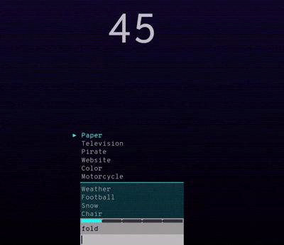
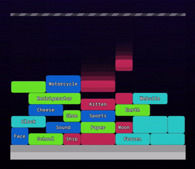
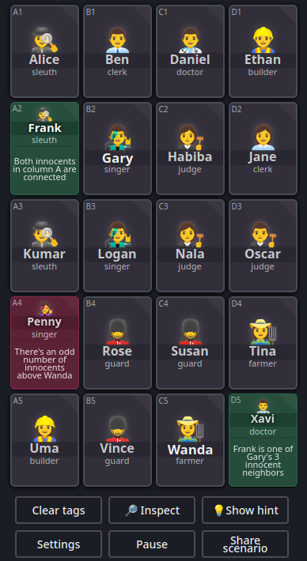
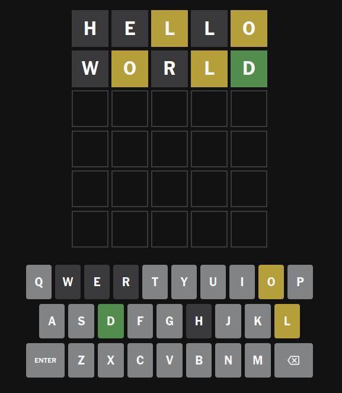
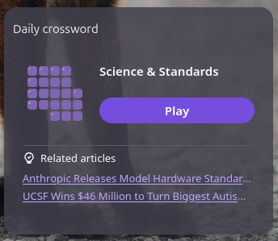
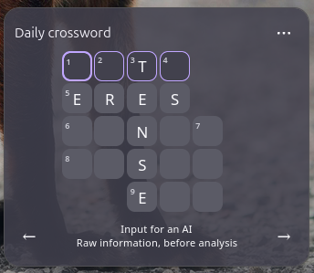

André Klaic
André Klaic
Stepping away from the dying internet
August 2026.
I've been trying to spend less time on social media for various reasons. To unwind in front of a screen without recurring to games that require a time commitment (like The Sims), I started trying out lighter, browser-based games. Currently, my favorites are Semantris, Clues By Sam and Wordle.
Semantris
This is a word-association game part of the Semantic Experience, by Google AI. There are two game modes, and each is cool in its own way (I like the Arcade mode a bit more). Here is the link.
Be careful to not swap one addiction for another, as these are highly cool games with instant rewards.
Arcade mode:

Blocks mode:

Clues By Sam
This is a 100% logic-based game that requires the understanding of the meaning of certain words, such as neighbor, above, and below, in the context of the game. It is so challenging that I get a bit tired if I play two or more rounds in a row. The playability is more complex than it appears at a first glance. Here is the link.
Speaking of alternatives to scrolling, I believe this is the most effective one on the list, as it requires a great deal of attention and provides a sense of continuity throughout the week.

Wordle
This is a daily word-guessing game. After each attempt, the player receives three distinct indications: correct letters in the right position (🟩), correct letter in the wrong position (🟨), and incorrect letter (⬛). I play the version available at NY Times, but there are several alternatives, such as the one on bored.com, that is slightly easier. I also play the portuguese version, Termo.

Daily Crossword
An honorable mention to this Firefox widget. It is a very well-crafted crossword puzzle: up to 3 hints per word, daily themes, and a good level of challenging. Once filled in, it highlights any incorrect letters, if there is any (otherwise, the congratulatory animation is pretty cool).
The widget in a new tab:

The gameplay:

Nowadays the dead internet theory is no longer just a conspiracy theory. Because of bots and automation, surely, but also due to themes, scripts and aesthetics that are endlessly replicated.
It is possible to step away from this problem: the site bored.com brings together many great websites - indeed, I found the three games described above there.
There is a guy posting daily websites recommendations on Instagram. The brazilian creator nando.mp4 brings these reflections to social media and shares cool original tools on his site.
The idea is not to become a digital hermit, but to remember that there is life beyond the concept of engagement and that we do not need to rely on an algorithm to decide what we consume next.